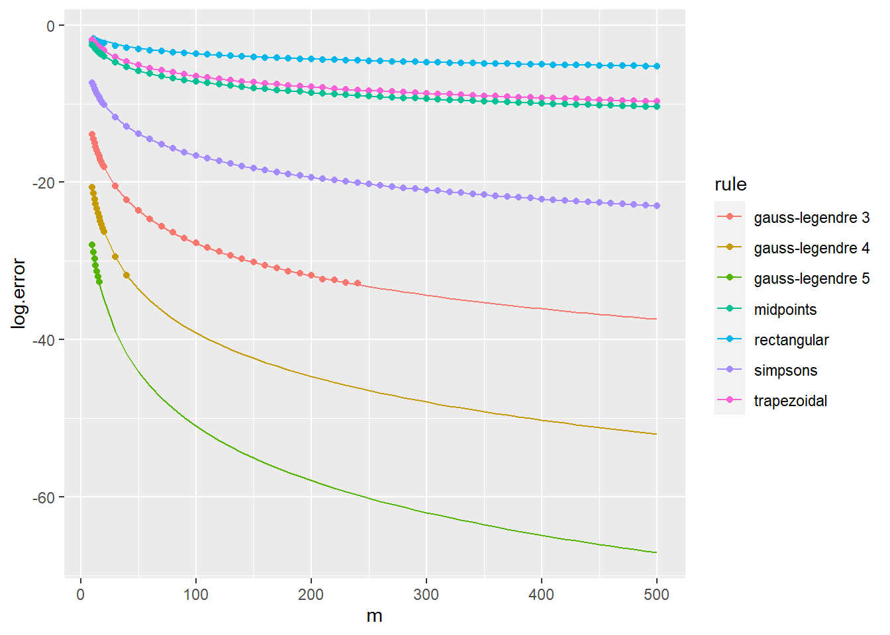
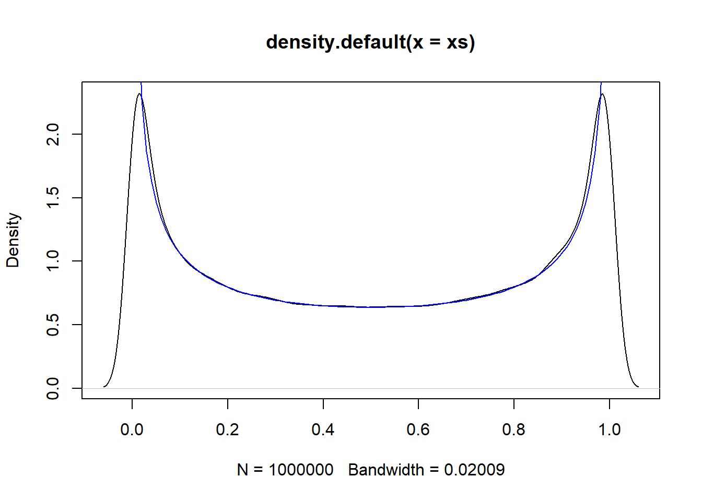
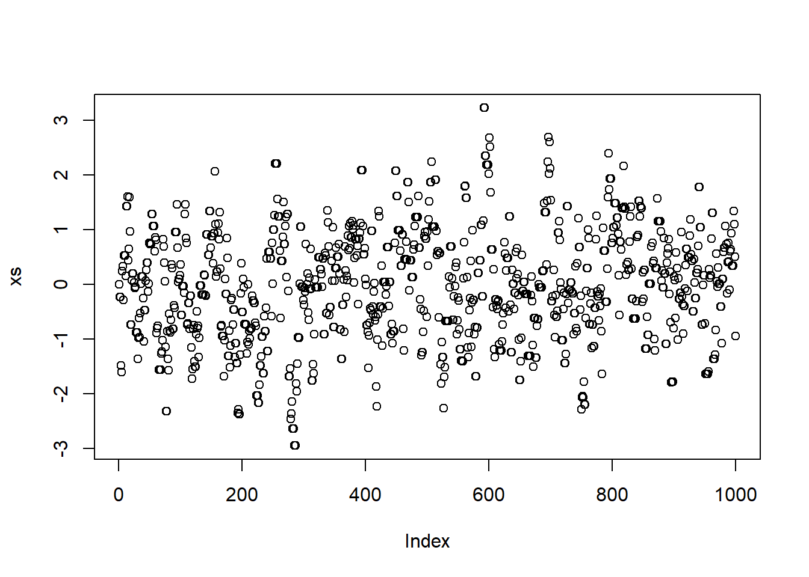
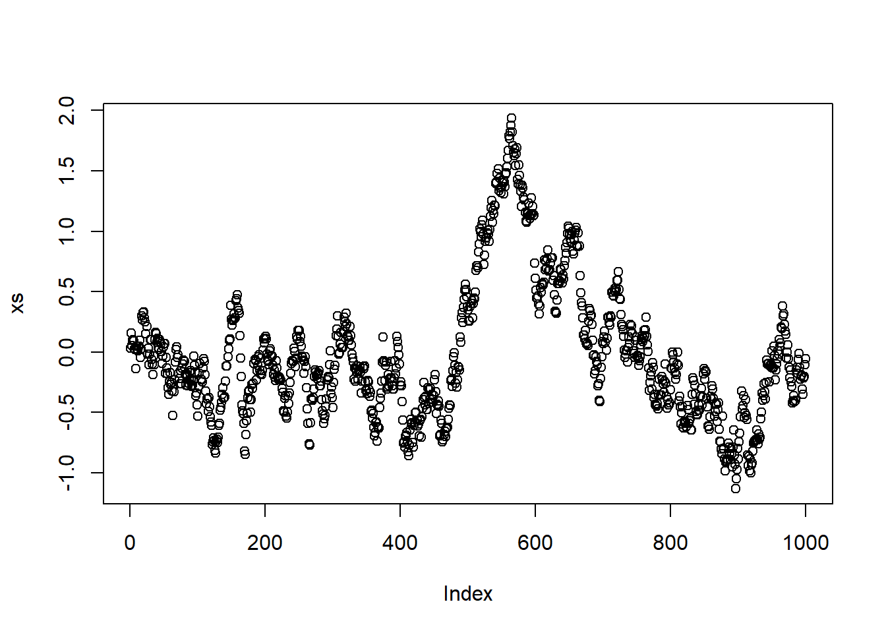
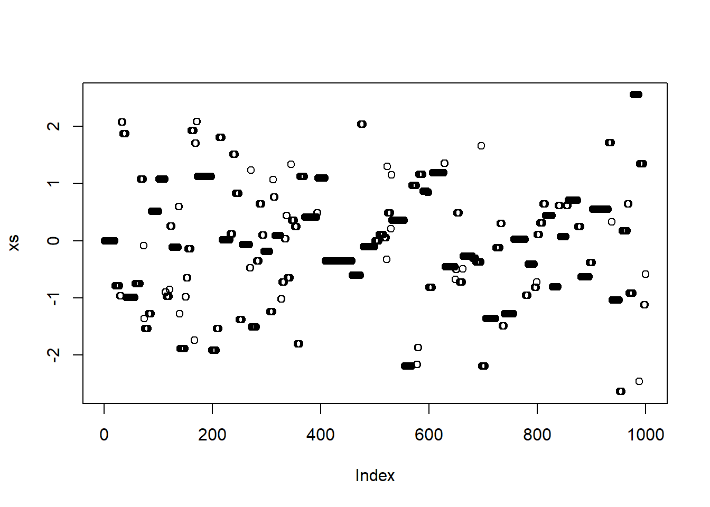

Quadratue rules are essentially integral approximations that use a finite number of function evaluations. We will focus on approximating the definite integral of \(f\) over \([a,b]\). For one dimensional integrals you can use integrate in R. For multiple integrals the cubature package can be used. These should provide more robust implementations.
The Weierstrass Approximation Theorem states that for \(f \in C^{0}([a,b])\) there is a sequence of polynomials \((p_{n})\) that converge uniformly to \(f\) on \([a,b]\). This suggests that for a given tolerance there exists a polynomial that can be used to approximate a given \(f\).
An approximation can be done useing Lagrange polynomials. Consider approximating \(f\) using \(k\) points \(\{(x_{i}, f(x_{i}))\}_{i=1}^{k}\). The interpolating polynomial is unique and has degree at most \(k-1\), it can be expressed as a Lagrange polynomial: \[p_{k-1}(x) := \sum_{i=1}^{k}l_{i}(x)f(x_{i}),\] where the Lagrange polynomials are: \[l_{i}(x) = \prod_{j=1,j \neq i}\frac{x - x_{j}}{x_{i} - x_{j}} . \]
If \(f\) has \(k\) continuous derivatives and \(p_{k=1}\) is the polynomial interpolating \(f\) at \(k\) points \(x_{1},...,x_{k}\) then for any \(x \in [a,b]\) there exists \(\xi \in (a,b)\) such that:
\[f(x) - p_{k-1}(x) = \frac{1}{k!}f^{k}(\xi)\prod_{i=1}^{k}(x-x_{i})\] This does not immediately provide a guarantee that a sequence of interpolating polynomials will converge uniformly or pointwise to \(f\). There is however a sequence of interpolation points that guarantee uniform convergence. These are called Chebyshev points: \[ \frac{cos(2i-1)}{2k}\pi, \; i \in \{1,...,k \},\] This bounds the absolute value of the product term by \(2^{1-k}\). There still exist functions that diverge on Chebyshev points but these are usually quite complex. These only apply to differentiable functions.
An alternative approach to fitting a high degree polynomial to many points is to fit lower degree polynomials on subintervals of the domain. This results in a piecewise polynomial approximation. For simplicity we consider the region \([a,b]\) partitioned into equal length subintervals. The scheme is ‘closed’ if we inclue the endpoints and ‘open’ if we do not. For a large number of subintervals the product term in the Interpolation Error can be made very small.
Some code for finding subintervals of equal size is given:
# get the endpoints of the subintervals
get.subinterval.points <- function(a, b, nintervals) {
return(seq(a, b, length.out=nintervals+1))
}
# returns which subinterval a point x is in
get.subinterval <- function(x, a, b, nintervals) {
h <- (b-a)/nintervals
return(min(max(1,ceiling((x-a)/h)),nintervals))
}
# get the k interpolation points in the interval
# this depends on the whether the scheme is open or closed
get.within.subinterval.points <- function(a, b, k, closed) {
if (closed) {
return(seq(a, b, length.out=k))
} else {
h <- (b-a)/(k+1)
return(seq(a+h,b-h,h))
}
}There are more polynomial interpolation schemes. You can use polynomials that incorporate derivatives of \(f\) as well as \(f\), this is known as Hermite interpolation. Matching derivatives at the boundaries of subintervals in piecewise polynomial interpolation is called spline interpolation. Cubic splines are a very popular way of approximating a function.
We consider approximating the integral: \[I(f) := \int_{a}^{b}f(x)dx, \] where \(f \in C^{0}([a,b])\). All approximations that we consider involve computing integrals associated with polynomial approximations such as we have considered above. The approximations are often referred to as quadrature rules.
For constants \(a < b\) and \(c < d\) we can accomodate a change of finite interval via: \[ \int_{a}^{b}f(x)dx = \int_{c}^{d}g(y)dy, \] defining \[g(y) := \frac{b-a}{d-c}g \Big{(}a + \frac{b-a}{d-c}(y-c)\Big{)}. \] Some code for implementing this:
change.domain <- function(f, a, b, c, d) {
g <- function(y) {
return((b-a)/(d-c)*f(a + (b-a)/(d-c)*(y-c)))
}
return(g)
}If we have a Lagrange polynomial \(p_{k-1}\) over [a,b] we have: \[I(p_{k-1}) = \sum_{i=1}^{k}f(x_{i})\int_{a}^{b}l_{i}(x) .\] We know \[l_{i}(x) = \prod_{j=1,j \neq i}\frac{x - x_{j}}{x_{i} - x_{j}} \] so the integral approximation depends only on the choice of interpolating points. The \(l_{i}\) can be complicated but are able to be integrated by hand for small \(k\).
The rectangular rule corresponds to a closed scheme with \(k = 1\): \[\hat{I}_{\rm rectangular}(f) = (b-a) f(a). \] The midpoint rule corresponds to an open scheme with \(k=1\): \[\hat{I}_{\rm midpoint}(f) = (b-a) f \left ( \frac{a+b}{2} \right). \] The trapezoidal rule corresponds to a closed scheme with \(k=2\): \[\hat{I}_{\rm trapezoidal}(f) = \frac{b-a}{2} \{ f(a)+f(b) \}. \] Simpson’s rule corresponds to a closed scheme with \(k=3\). We obtain: \[\hat{I}_{\rm Simpson}(f) = \frac{b-a}{6} \left \{ f(a) + 4 f \left ( \frac{a+b}{2} \right) + f(b) \right \}. \] A simple implementation in R is given below:
newton.cotes <- function(f, a, b, k, closed) {
if (k == 1) {
if (closed) {
return((b-a)*f(a))
} else {
return((b-a)*f((a+b)/2))
}
}
if (k == 2 && closed) {
return((b-a)/2*(f(a)+f(b)))
}
if (k == 3 && closed) {
return((b-a)/6*(f(a)+4*f((a+b)/2)+f(b)))
}
stop("not implemented")
}It is possible to obtain a crude bound on the error of these schemes. We find that often the midpoint rule can perform better than the trapezoid rule even though it requires less points.
When a composite polynomial interpolation is used the approximation is simply the sum of the integrals on each subinterval. Hence a composite Newton-Cotes rule is obtained by splitting \([a,b]\) into \(m\) subintervals and summing the approximate intervals for each subinterval. \[\hat{I}^m_{\rm rule}(f) = \sum_{i=1}^m \hat{I}_{\rm rule}(f_i), \] where \(f_{i}\) is \(f\) on \([a + (i-1)h,a+ih]\) and \(h = \frac{b-a}{m}\).
Guassian quadrature is similar to Chebyshev points in that it exploits the freedom of interpolation points to reduce the error of the approximate integral in the form: \[ I = \int_{a}^{n}f(x)w(x)dx \] where \(w\) is continuous and positive on \((a,b)\) and \(\forall n \in \mathbb{N},\int_{a}^{b}x^{n}w(x)dx\) is finite. Defining the function space: \[ L_{w}^{2}([a,b]) := \Big{\{} f: \int_{a}^{b} f(x)^{2}w(x)dx < \infty \Big{\}} \] There exists a unique sequence of orthogonal polynomials \(p_{0},p_{1},...\) in \(L_{w}^{2}([a,b])\) that are monic. These can be found using the Gram-Schmidt process. We choose the interpolation points as the \(k\) roots of \(p_{k}\) for the Gaussian quadrature rule. For a composite Gauss-Legendre rule we have:
\[ \hat{I}^{m}_{\rm Gauss-Legendre}(f) = \frac{(b-a)^{2k + 1}(k!)^{4}}{(2k + 1)\{ (2k)!\}^{3}}f^{(2k)}(\xi) \]
gauss.legendre.canonical <- function(f, k) {
if (k == 1) {
return(2*f(0))
}
if (k == 2) {
return(f(-1/sqrt(3)) + f(1/sqrt(3)))
}
if (k == 3) {
return(5/9*f(-sqrt(3/5)) + 8/9*f(0) + 5/9*f(sqrt(3/5)))
}
if (k == 4) {
tmp <- 2/7*sqrt(6/5)
xs <- rep(0, 4)
xs[1] <- sqrt(3/7 - tmp)
xs[2] <- -sqrt(3/7 - tmp)
xs[3] <- sqrt(3/7 + tmp)
xs[4] <- -sqrt(3/7 + tmp)
ws <- rep(0, 4)
ws[1] <- ws[2] <- (18+sqrt(30))/36
ws[3] <- ws[4] <- (18-sqrt(30))/36
return(sum(ws*vapply(xs, f, 0)))
}
if (k == 5) {
tmp <- 2*sqrt(10/7)
xs <- rep(0, 4)
xs[1] <- 0
xs[2] <- 1/3*sqrt(5 - tmp)
xs[3] <- -1/3*sqrt(5 - tmp)
xs[4] <- 1/3*sqrt(5 + tmp)
xs[5] <- -1/3*sqrt(5 + tmp)
ws <- rep(0, 5)
ws[1] <- 128/225
ws[2] <- ws[3] <- (322 + 13*sqrt(70))/900
ws[4] <- ws[5] <- (322 - 13*sqrt(70))/900
return(sum(ws*vapply(xs, f, 0)))
}
stop("not implemented")
}
gauss.legendre <- function(f, a, b, k) {
g <- change.domain(f, a, b, -1, 1)
gauss.legendre.canonical(g, k)
}
composite.gauss.legendre <- function(f, a, b, subintervals, k) {
rule <- function(f, left, right) {
gauss.legendre(f, left, right, k)
}
return(composite.rule(f, a, b, subintervals, rule))
}
composite.gl.3 <- vapply(ms, function(m) composite.gauss.legendre(sin, 0, 10, m, 3), 0)
composite.gl.3[log(abs(composite.gl.3 - val)) < -33] <- NA
composite.gl.4 <- vapply(ms, function(m) composite.gauss.legendre(sin, 0, 10, m, 4), 0)
composite.gl.4[log(abs(composite.gl.4 - val)) < -33] <- NA
composite.gl.5 <- vapply(ms, function(m) composite.gauss.legendre(sin, 0, 10, m, 5), 0)
composite.gl.5[log(abs(composite.gl.5 - val)) < -33] <- NA
tg3 <- tibble(m=ms, rule="gauss-legendre 3", log.error=log(abs(composite.gl.3- val)),
theory=log(0.18*factorial(3)^4/factorial(2*3)^3/(2*3+1)*10^7/ms^6))
tg4 <- tibble(m=ms, rule="gauss-legendre 4", log.error=log(abs(composite.gl.4- val)),
theory=log(0.18*factorial(4)^4/factorial(2*4)^3/(2*4+1)*10^9/ms^8))
tg5 <- tibble(m=ms, rule="gauss-legendre 5", log.error=log(abs(composite.gl.5- val)),
theory=log(0.18*factorial(5)^4/factorial(2*5)^3/(2*5+1)*10^11/ms^10))
tib <- bind_rows(tr, tt, tm, ts, tg3, tg4, tg5)
ggplot(tib, aes(x=m, colour=rule)) + geom_point(aes(y=log.error), na.rm=TRUE) + geom_line(aes(y=theory)) We see that the Gauss-Legendre implementations offer a far quicker convergence rate compared to the previous best which was Simpson’s rule.
The methods above can be enhanced by various adaptations and practical error estimation. They are designed to estimate bounds on the error and spend more computational effort in subintervals where the integral is estimated poorly. Defining a robust algorithm involves specifying change of variables for dealing with semi-infinite and infinite intervals. The weight function can also be varied to produce a better approximation.
Consider an integral over \(D = [a_{1}, b_{1}] \times ... \times [a_{d}, b_{d}]\): \[I(f) = \int_{D} f(x_{1},...,x_{d})d(x_{1},...,x_{d}).\] According to Fubini’s Theorem, and letting \(D' = [a_{2}, b_{2}] \times ... \times [a_{d}, b_{d}]\) we can often rewrite \(I(f)\) as an iterated integral: \[ I(f) = \int_{a_{1}}^{b_{1}} \int_{D'} f(x_{1},...,x_{d}) d(x_{2},...,x_{d}) dx_{1} = \int_{a_{1}}^{b_{1}}g(x_{1}) dx_{1} \] We develop a recursive algorithm using an approximation of \(g\) to approximate \(I(f)\).
\[\hat{I}(f) = \sum_{i=1}^k \hat{g}(x_1^{(i)}) \int_{a_1}^{b_1} \ell_i(x_1) {\rm d}x_1, \]
where \(\hat{g}(x_{1}) = \hat{I}(h_{x_{1}})\).
Quadrature rules quickly become prohibitively expensive in high dimensional problems, we consider Monte Carlo algorithms for higher dimensions.
Letting \((X, \mathcal{X})\) be a measurable space. We have target probability measure \(\pi: \mathcal{X} \rightarrow [0,1]\) and want to approximate: \[ \pi(f) := \int_{X}f(x)\pi(dx), \]
where \(f \in L_{1}(X, \pi) = \{f:\pi(|f|) < \infty \}\). This is equivalent to \(\pi(f)\) being the expectation of \(f(X)\) when \(X \sim \pi\).
Let \((X_{n})_{n \geq 1}\) be a sequence of i.i.d. random variables distributed according to \(\mu\). Define: \[S_{n}(f) := \sum_{i=1}^{n}f(X_{i}),\] for \(f \in L_{1}(X, \mu).\) Then: \[\lim_{n \rightarrow \infty} \frac{1}{n}S_{n}(f) = \mu(f), \]
We call this a Monte Carlo approximation of \(\mu(f)\). This is an unbiased estimator. The variance of this estimate is \(\frac{\mu(f^{2}) - \mu(f)^{2}}{n}\).
Central limit theorem: If \(f \in L_{2}(X, \mu)\) then: \[n^{1/2}\{n^{-1}S_{n}(f) - \mu(f) \} \rightarrow X \sim N(0, \mu(\bar{f}^{2})) ,\] where \(\bar{f}\) = \(f - \mu(f)\).
This is a slow convergence rate compared to quadrature rules in one dimension. Dimension does not directly affect convergence however \(\bar{f}\) can be very large for large \(d\).
There are several sampling methods available. If we can simulate random variates \(\pi\) on a computer then this is called perfect sampling.
Another more applicable method is rejection sampling. This applies when one can sample \(\mu\)-distributed random variates from proposal distribution \(\mu\) and \(\pi/\mu\) satisfies \(\sup_{x\in X}\pi(x)/\mu(x) \leq M < \infty\). The algorithm is:
Sample \(X \sim \mu\)
With probability \(\frac{1}{M}\frac{\pi(X)}{\mu(X)}\) output X, otherwise go to step 1
Rejection sampling works best when the proposal distribution is close to the true distribution as this will cause more samples to be accepted however it is not required. In many practical applications \(M\) is prohibitively large. A simple rejection sampling implementation is given below:
rejection.sample <- function(pi, mu, M) {
while (TRUE) {
x <- mu$sample()
y <- runif(1) < pi(x)/mu$density(x)/M
if (y) {
return(x)
}
}
}Importance sampling assumes \(\pi(x) > 0 \rightarrow \mu(x) > 0\). Importance sampling is motivated by expressing \(\pi(f)\) as an integral w.r.t. \(\mu\). We find \(\pi(f) = \mu(f \cdot w)\) where \(w(x) = \pi(x)/\mu(x)\). This justifies using \(n^{-1}S_{n}(f \cdot w)\) as an approximation of \(\pi(f)\). In many cases importance sampling is used because it is not known how to sample \(\pi\)-distributed random variables. In this case it is sufficient to have \(w\) uniformly bounded to ensure \(f \in L^{2}(X, \pi) \rightarrow f \cdot w \notin L^{2}(X, \mu)\). In high dimensions it is common for the variance to be prohibitively large for reasonable values of \(n\).
Assume we are on measureable space \((X, \mathcal{X})\) and that \(\mathcal{X}\) is countably generated. Let \(\mathbf{X} := (X_{n})_{n \geq 0}\) be a discrete time Markov chain evolving on X for some initial \(X_{0}\). This means for \(A \in \mathcal{X}\):
\[ P(X_{n} \in A|X_{0} = x_{0},...,X_{n-1}=x_{n-1}) = P(X_{n} \in A | X_{n-1} = x_{n-1}). \]
Suppose \(\mathbf{X}\) is a time-homogenous, positive Harris Markov chain with invariant probability measure \(\pi\). Then for all \(f \in L_{1}(X, \pi) = \{ f:\pi(|f|) \leq \infty \}\),
\[ \lim_{n \rightarrow \infty} \frac{1}{n}S_{n}(f) = \pi(f), \]
almost surely for any initial distribution \(X_{0}\).
The most commonly used Markov chains in practice are constructed using Metropolis-Hastings Markov transition kernels.
Assume \(\pi\) has a density w.r.t. some measure \(\lambda\). For a target \(\pi\) we only need to specifiy a proposal Markov kernel \(Q\) admitting a density \(q\) w.r.t. \(\lambda\). \[ Q(x, dz) = q(x, z)\lambda(dz). \]
To simulate according to \(P_{MH}(x,\cdot)\):
Simulate \(Z \sim Q(x,\cdot)\)
With prob \(\alpha_{MH}(x, Z)\) output \(Z\). Otherwise output \(x\). We define: \[ \alpha_{MH}(x, z) := \min \bigg{(}1, \frac{\pi(z)q(z,x)}{\pi(x)q(x, z)}\bigg{)} \]
So we only need to be able to simulate from \(Q(x,\cdot)\) and know the density \(\pi\) up to a normalizing constant to simulate from \(P_{MH}(x, \cdot)\). A common choice for the MH kernel is the normal distribution, in this case \(q\) is symmetric so \(\alpha_{MH}(x ,z) = \min(1, \pi(z)/\pi(x))\).
# Proposal must be a function that returns a random deviate some distibution i.e. rnorm, rbinom
make_proposal <- function(proposal, ...) {
Q <- function() proposal(1, ...)
}
# Note: this simple implementation assumes symmetric proposal
MH_chain <- function(pi, Q, init, n) {
x <- init
xs <- rep(0, n)
for (i in 1:n) {
z <- x + Q()
p <- min(1, pi(z)/pi(x))
x <- sample(c(x, z), size = 1, prob = c(1-p, p))
xs[i] <- x
}
return(xs)
}Then we can implement this to simulate a beta distribution with shape parameters \(\alpha = 0.5, \beta = 0.5\).
Q <- make_proposal(rnorm,mean = 0, sd = 1)
pi <- function(x) dbeta(x, shape1 = 0.5, shape2 = 0.5)
xs <- MH_chain(pi, Q, 0.5, 1000000)
plot(density(xs))
vs <- seq(0, 1, 0.01)
lines(vs, dbeta(vs, 0.5, 0.5), col = "blue")
We can see the Metropolis Hastings produces a fairly close fit.
Finally we look at how the proposal standard deviation controls the chain. We use medium jumps:
Q <- make_proposal(rnorm, sd = 1)
xs <- MH_chain(dnorm, Q, 0, 1000)
plot(xs)
Small jumps:
Q <- make_proposal(rnorm, sd = 0.1)
xs <- MH_chain(dnorm, Q, 0, 1000)
plot(xs) and large jumps:
Q <- make_proposal(rnorm, sd = 10)
xs <- MH_chain(dnorm, Q, 0, 1000)
plot(xs)
It is important to cater jump sizes to the nature of the problem.
In order to show P leaves \(\pi\) invariant we need to check \(\pi P = \pi\). it can be shown that any \(\pi\)-reversible Markov chain is a stationary Markov chain with invariant probability \(\pi\). We can also show that any Metropolis Hastings Markov chain is \(\pi\)-reversible.
We can construct \(\pi\)-invariant Markov chains out of different \(\pi\)-invariant Markov transition kernels. Hybrid chains like this are common, such as the Gibbs sampler. A Markov kernel \(P\) is a mixture of Markov kernels \((P_{s})_{s \in S}\) if:
\[P(x, A) = \sum_{s \in S}w(s)P_{s}(x, A), \]
where \(w\) is a p.m.f. This can be used to construct more sophisticated Markov chains as we know a mixture of \(\pi\)-invariant Markov kernels is \(\pi\)-invariant.